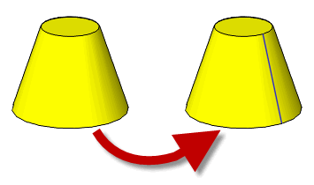

| |
Splitting Topology |
| <<< Controlling Redundant Topology | Chapters | Introduction To Profiling and Surfacing >>> |
The following functions are used to split topological entities:
You can use these functions to create additional edges or faces in a model. For example, Parasolid does not split topology at periodic boundaries by default - a cylindrical face is not given a “seam”. You can call PK_FACE_split_at_param to create a seam, as shown in Figure 35-1.
Figure 35-1 Splitting a periodic face in order to produce a seam
PK_EDGE_split_at_param receives the following arguments:
edge |
|
param |
The parameter at which |
PK_EDGE_split_at_param returns the following arguments:
PK_EDGE_split_at_param accepts both tolerant and accurate edges. In order for the edge to be split successfully, the following must all be true:
param
must be inside the range of edge
param
must not evaluate to a point coincident with any vertex on
edge
edge
must have attached geometryPK_FACE_split_at_param receives the following arguments:
face |
|
param |
|
param_dir |
The direction that the face should be split:
|
PK_FACE_split_at_param returns the following arguments:
|
|
|
|
|
|
If the face is split successfully, then new edges are created. This in turn may lead to the creation of new faces. If new faces are created, the original face lies on the right of one of the new edges. All new edges go in the direction of
param_dir
. New edges are those that are imprinted onto the face during the operation. Derived edges, that are created as a result of splitting existing edges, are not returned in
new_edges
.
|
Note: This functionality does not support facet geometry. |
| <<< Controlling Redundant Topology | Chapters | Introduction To Profiling and Surfacing >>> |